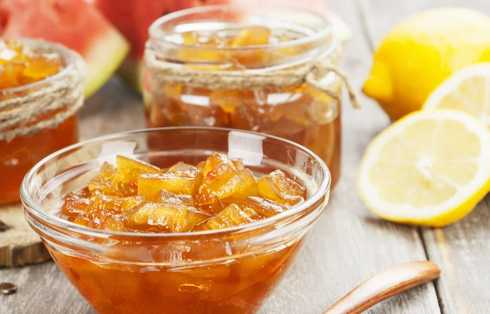

Когда мы думаем о варенье, первое, что приходит на ум, обычно, это классические виды из ягод и фруктов, такие как клубника, вишня или абрикос. Однако существует множество необычных и вкусных вариантов варенья, которые могут удивить нас своими сочетаниями вкусов и необычными ингредиентами. Одним из таких удивительных вариантов является кабачковое варенье. Возможно, это звучит необычно, но это действительно варенье, которое стоит попробовать.

Кабачковое варенье обладает рядом преимуществ, которые делают его привлекательным выбором для здорового и разнообразного питания.
Во-первых, кабачки содержат ряд важных питательных веществ, включая витамины А, С и К, фолиевую кислоту, магний, калий и диетическое волокно. Эти питательные вещества поддерживают здоровье глаз, иммунную систему, сердечно-сосудистую систему и пищеварительную систему.
Во-вторых, варенье из кабачков содержит клетчатку, которая способствует нормализации пищеварительного процесса, помогает поддерживать здоровую микрофлору в кишечнике и предотвращает запоры.
В-третьих, кабачки содержат антиоксиданты, такие как бета-каротин и лутеин, которые помогают защитить клетки от повреждений свободными радикалами и снижают риск развития хронических заболеваний.
Одно из удивительных свойств кабачкового варенья - это его нежный вкус и приятная текстура. Кабачки, сваренные вместе с сахаром и другими ингредиентами, приобретают сладковатый вкус с легкой горчинкой, которая приятно сбалансирована. Варенье имеет густую и мягкую текстуру, которая прекрасно сочетается с хлебом, блинами или добавляется в выпечку.
Приготовление кабачкового варенья не сложно. Вот простой рецепт, который вы можете попробовать:
Ингредиенты:
Инструкции:
Кабачковое варенье - это интересный и необычный выбор для тех, кто хочет разнообразить свою кулинарную жизнь. Его нежный вкус, полезные свойства и простота приготовления делают его привлекательным лакомством для всей семьи. Попробуйте приготовить кабачковое варенье и откройте для себя новые гастрономические впечатления.